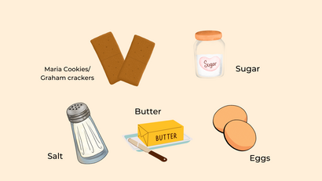
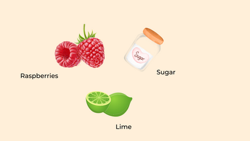

Raspberry Cheesecake
This is the best cheesecake you will ever try and the raspberry sauce takes it to another level. And it is so easy to make.

Ingredients
Crust
4 8oz packages of cream cheese
4 eggs
1 1/3 cups of sugar
1 1/3 cup of whipping cream
2 teaspoons of vanilla extract
Pinch of salt
Filling

2 cups of Maria Cookies or graham crackers
8 tablespoons of butter
3 tablespoons of sugar
Salt
1 egg
Sauce
4 cups of frozen raspberries
8 tablespoons of sugar
1 lime
Fresh raspberries (optional)
Preparation
1. Preheat the oven to 350F. Use a food processor to make maria cookie crumbs. Add sugar, and salt, then mix. Add melted butter and egg. Add the pan to a round springform pan. You can add parchment paper to it at the bottom but usually these pans are non-stick. Bake for 8- 10 min. Then set aside.
2. In a bowl add the cream cheese, eggs, sugar, whipping crem, vanilla and salt. Use a hand mixer or a stand mixer to mix it. This will help soften the cream cheese. when smooth and creamy add it to the crust.
3. After you pour the batter into the pan you can remove any air bubbles by banging the pan on to the kitchen counter (be careful, the pan could still be hot). Put the pan on a large roasting pan and add a few inches of water to create a water bath. Bake for 75 minutes.
4. Then turn of the heat and leave the oven door opened for an hour so the cheesecake can rest. Then you can take it out and once it reaches room temperature put it in the fridge for at least 6 hours.
5. To make the sauce add the frozen raspberries, sugar and the juice of a lime into a pan in medium high heat. Use the back of a spoon to mash the raspberries as they are cooking. Make sure to be constantly stirring it so it does not stick to the pan.
6. Once the sauce is boiling turn off the heat and let it rest so it thickens. You can also strain the raspberries seeds, but we prefer to keep them.
7. Assemble the cheesecake by adding the raspberry sauce and top it with some fresh raspberries. Enjoy!